Mes Compétences
Gérer le patrimoine informatique
- Recenser et identifier les ressources numériques: (HP Pavillion,DELL)
- Exploiter des référentiels et normes (ITIL, RGPD, ISO 27001):RGPD:Le règlement général sur la protection des données (RGPD) est un texte réglementaire européen qui harmonise les règles de traitement des données à caractère personnel dans toute l'Union européenne.
- Vérifier les règles d’utilisation des ressources:Mettre en place une charte informatique
- Travailler autour de la sauvegarde:Assurer la protection des données d’une application
(base de données, fichiers, comptes utilisateurs) afin d’éviter toute perte en cas de :
Panne serveur
Erreur humaine
Vérifier le respect des règles d'utilisation des ressources numeriques
Accès aux sites autorisés uniquement
Absence de téléchargement illégal
Respect des droits d’auteur
Utilisation correcte des emails professionnels
Répondre aux incidents et demandes d’assistance
- Collecter, suivre et orienter des demandes
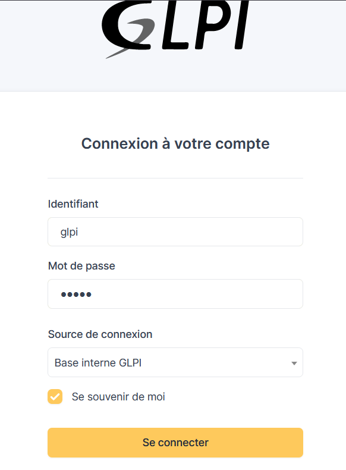
- Traiter des demandes réseau et système
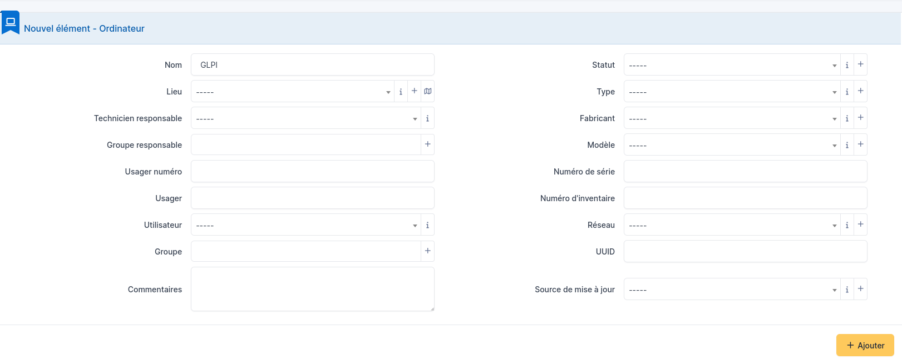
- Traiter des demandes concernant les applications
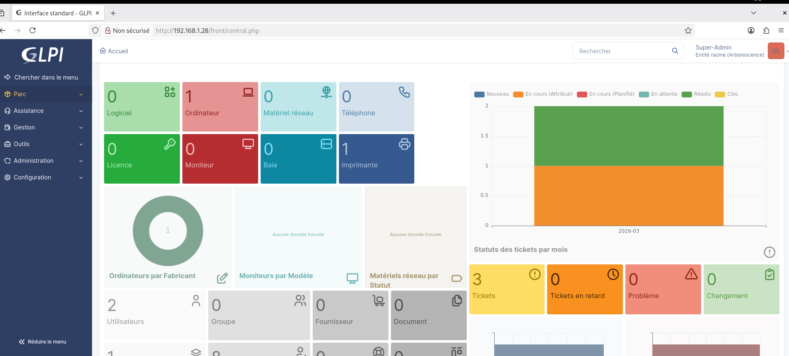
Développer la présence en ligne de l'organisation
- Participer à la valorisation de l’image de l’organisation sur les médias numériques en tenant compte du cadre juridique et des enjeux économiques il y a des enjeux économiques des cadres juridiques,des contenus et publicité,des concurrent,tout çà représente l'organisation
- Référencer les services en ligne de l’organisation et mesurer leur visibilité. Lors de mon stage , j’ai participé aux services en ligne. (prise de rendez-vous, consultation des résultats, informations médicales) afin d’améliorer leur visibilité sur Internet.
- Participer à l’évolution d’un site Web exploitant les données de l’organisation.
- communication responsable
- Stratégie efficace
- Presence active sur les réseaux sociaux
- Analyse d'adaptation :suivi des performances
- Analyse et alignement de stratégie Participer à l’évolution d’un site web, c’est donc analyser, améliorer, sécuriser et optimiser en continu pour répondre aux objectifs de l’organisation.
- ▸Réaliser les tests d’intégration et d’acceptation d’un service
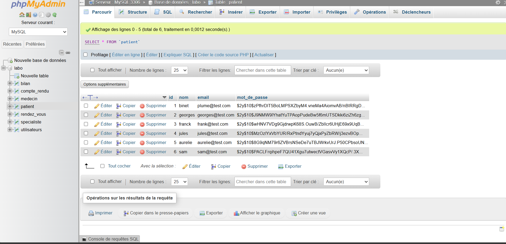
- Déployer un service
- Accompagner les utilisateurs dans la mise en place d’un service>
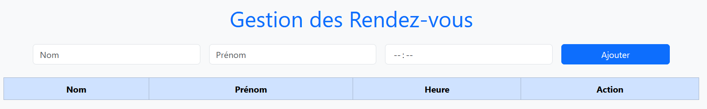
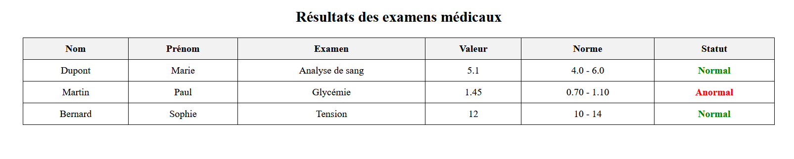
Mettre à disposition des utilisateurs un service informatique
>Health North teste son application avec de vrais utilisateurs (patients ou secrétaires) pour voir si tout fonctionne correctement. Toutes les fonctions demandées au départ ont bien été développées. Rien d’important ne manque. L’interface est claire Les boutons sont compréhensibles Il n’y a pas de manipulation compliquée
Pour exemple ,des images de Health North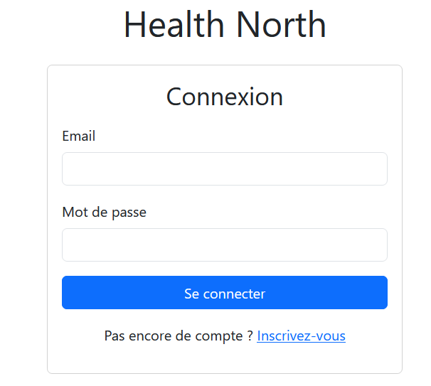
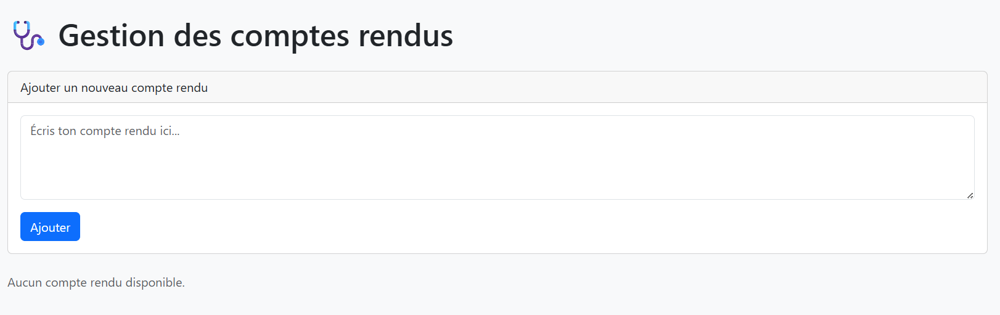

La prise en main du service permet une réduction des erreurs. Pour une meilleure crédibilité de l'application,une amélioration du service,grace aux retours.
Travailler en mode projet
Il faut analyser,récolter et clarifier les objectifs attendus,bon ou pas.
il faut densifier les causes des écarts et mettre en place des actions correctives.
Si il y a un problème,il faudra ajuster le planning ou les ressources si nécessaire
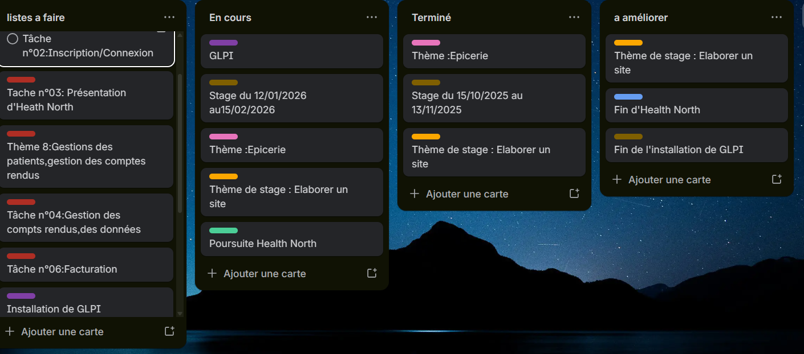
"Organiser son développement professionnel
-
Mettre en place son environnement d’apprentissage personnel
- Installer un poste de travail performant (IDE comme VS Code, environnement Java/PHP, SGBD).
- Utiliser des outils de versioning comme Git et GitHub.
VScode est un IDE ( Les outils et services de Visual Studio facilitent le développement d'applications pour toutes les plateformes et tous les langages.)
Un système de gestion de base de données (SGBD) est un logiciel qui permet à un ordinateur de stocker, récupérer, ajouter, supprimer et modifier des données.
 ,
,
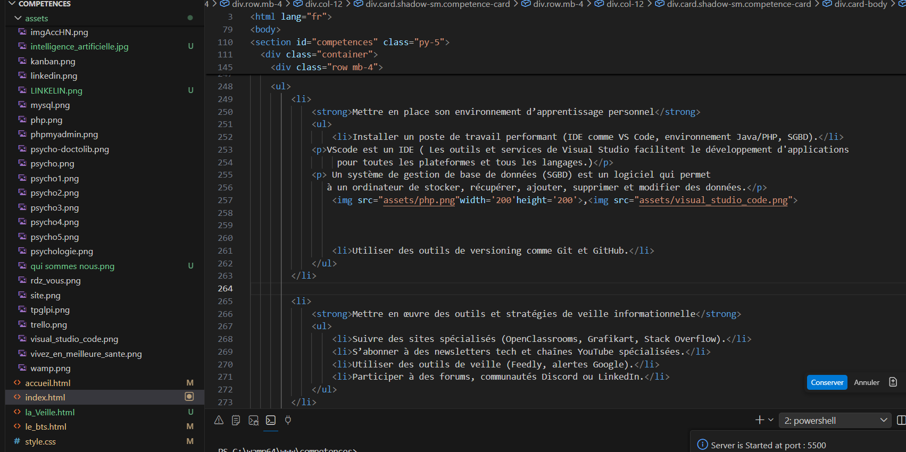
,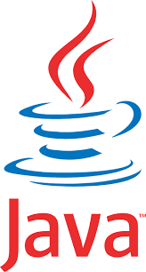
,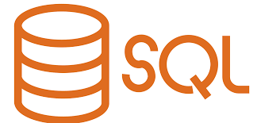
-
Mettre en œuvre des outils et stratégies de veille informationnelle
- Suivre des sites spécialisés (OpenClassrooms, Grafikart, Stack Overflow).
- S’abonner à des newsletters tech et chaînes YouTube spécialisées.
- Utiliser des outils de veille (Feedly, alertes Google).
- Participer à des forums, communautés Discord ou LinkedIn.
-
Gérer son identité professionnelle
- Créer et maintenir un profil LinkedIn à jour.
- Développer un portfolio en ligne présentant ses projets (HTML/CSS, PHP, Java, SQL).
- Publier ses projets sur GitHub avec documentation claire.
- Adopter une communication professionnelle (mail, réseaux, CV).
-
Développer son projet professionnel
- Poursuite d’études (Licence professionnelle, Bachelor, école d’ingénierie).
- Insertion professionnelle (développeur web, développeur d’applications, technicien informatique).
- Identifier les compétences à renforcer selon son objectif (frameworks, cybersécurité, DevOps).
- Construire un plan d’action : stages, certifications, projets personnels.